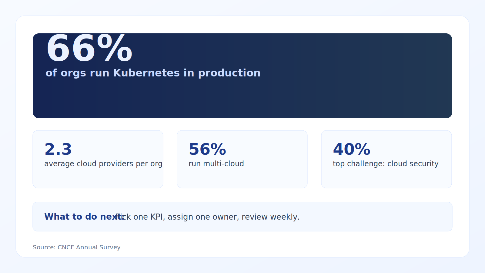

The fastest wins are rightsizing, storage lifecycle controls, and idle resource cleanup with ownership.
Cloud cost trends that matter in 2026
Updated with current benchmarks and practical implementation guidance for 10–100 person teams.
What is working now
- Complexity, not raw spend, is now the biggest cost risk for growing teams.
- Multi-cloud and Kubernetes adoption increase flexibility but also increase waste risk without ownership.
- FinOps works best when connected to engineering cadence, not finance-only reviews.
Evidence and benchmarks
- 2.3 average number of public cloud providers in use (CNCF, 2023). Source
- 56% of organisations use multi-cloud solutions (CNCF, 2023). Source
- 66% Kubernetes production usage among end-user consumers (CNCF, 2023). Source
- 28% run public-cloud-only strategy (CNCF, 2023). Source
Execution playbook (next 30 days)
- Assign spend owners for each environment/team and publish weekly exception list.
- Apply rightsizing + idle resource cleanup before commitment discounts.
- Track unit economics (cost per deploy / customer / tenant), not just total invoice.

Citations